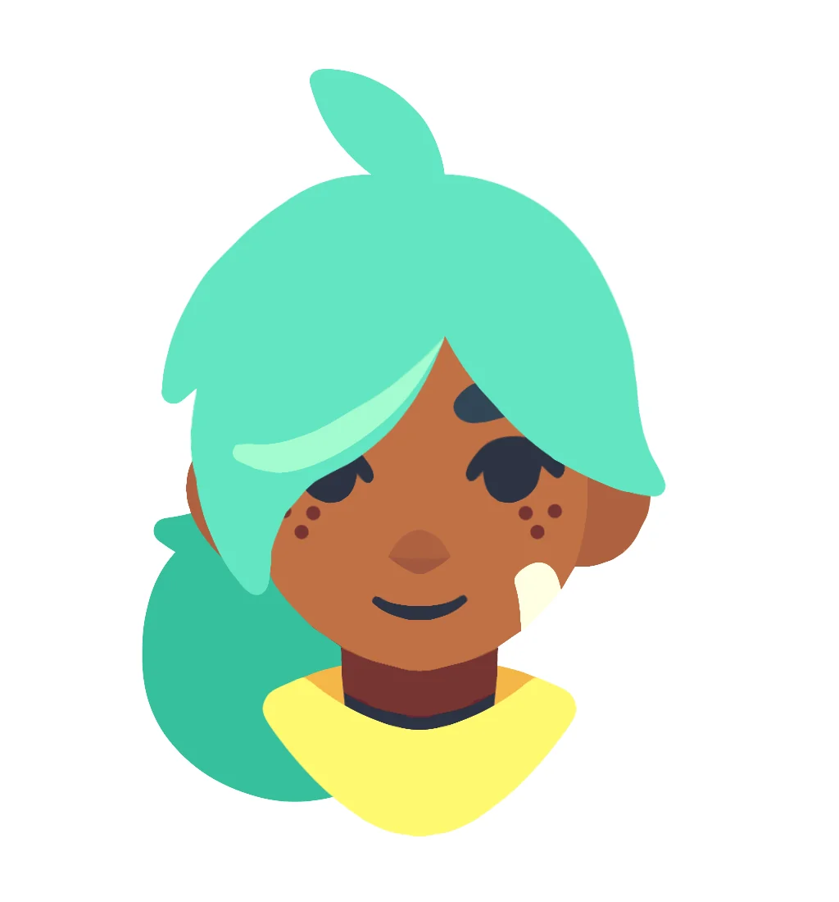
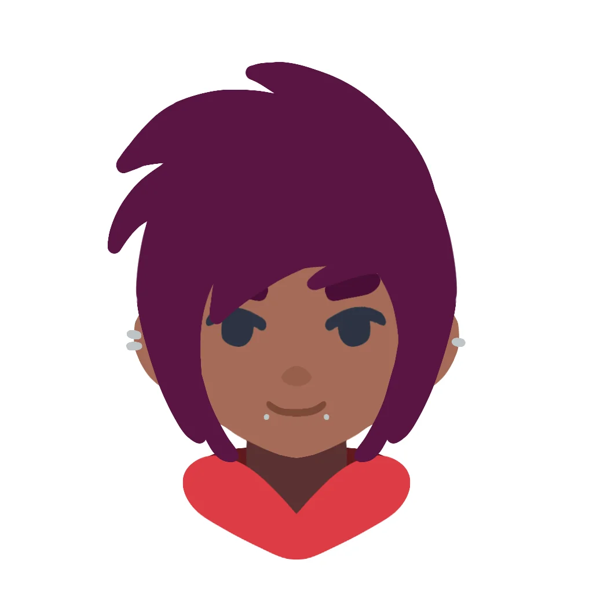
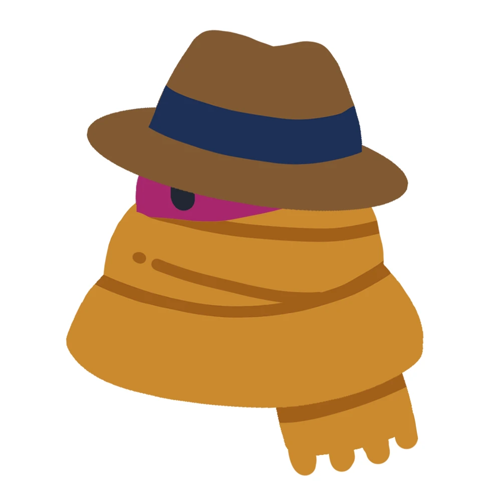

Enredo e Personagens
A Aventura Continua
Slime Rancher 2 convida os jogadores de volta à Borda muito distante, Mas sendo um lugar muito mais distante , mas desta vez para um novo local: a Ilha Arco-Íris. A história se desenrola enquanto Beatrix LeBeau explora esta terra misteriosa e prismática, descobrindo tecnologia antiga, recursos desconhecidos e uma infinidade de novos slimes.
O Mistério do Núcleo Prismatico
No coração da ilha reside o Núcleo Prismatico, uma fonte de energia colossal que sustenta a realidade da Ilha Arco-Íris. No entanto, o Prismacore está desestabilizado, causando distorções espaciais e temporais. A missão de Beatrix evolui de uma simples exploração para uma corrida contra o tempo para estabilizar este núcleo antes que a ilha — e possivelmente todo o planeta — sofra danos irreversíveis.
Personagens Principais
Beatrix LeBeau

A amada, destemida e sempre curiosa protagonista. Armada com sua Vacpack aprimorada, Beatrix é impulsionada por uma nova série de cartas de exploradores passados, guiando-a para descobrir o verdadeiro propósito da ilha e os segredos por trás do mar de slimes.
Gigi
Gigi, cujo nome completo é Gigi Twillgers-West, é uma NPC encontrada em Slime Rancher 2 que vive na Ilha Arco-Íris há muito tempo. Ela está tentando conter os efeitos do Prismacore. Gigi é revelada como uma viajante do tempo vinda do futuro, filha de Thora West e Hobson Twillgers. Ela desempenha um papel crucial na história de fundo da Ilha Arco-Íris e do Prismacore, buscando a ajuda de Beatrix para estabilizar o Prismacore e corrigir seus erros.
Viktor Humphries
Viktor Humphries é um rancheiro de slimes, cientista e músico amador. Ele é conhecido por sua inteligência e por se comunicar frequentemente por meio de Starmail. Em Slime Rancher 2, Viktor é contatado por Gigi, que se disfarça de IA curiosa para avaliar suas habilidades científicas e sua confiabilidade. Ele desempenha um papel crucial ao completar os projetos incompletos do Projetor Radiante, permitindo que Beatrix acesse o Labirinto Cinzento e se comunique diretamente com Gigi.
Mochi Miles
Mochi Miles é a filha do bilionário Tatsuya Miles e uma rancheira de slimes muito competitiva. Ela trabalha para seu pai, dominando o Mercado de Plorts. Mochi frequentemente solicita Plorts que, segundo a visão de seu pai, trarão "grandes lucros mais tarde". Sua relação com o pai é sugerida como sendo tensa. Ela é a quinta NPC a enviar StarMail para Beatrix.
Ogden Ortiz
Ogden Ortiz é um rancheiro de slimes que se considera um "fazendeiro". Ele veio para a Longínqua, Longínqua Distância para cultivar como as pessoas fazem na Terra, e só cria slimes que comem frutas e vegetais. Ele é conhecido por suas solicitações de frutas e vegetais no Range Exchange e por sua paixão por Kookadobas, uma fruta rara encontrada em The Wilds. Seu diálogo sugere que ele é um cozinheiro habilidoso.

Casey
Casey é a pessoa especial de Beatrix na Terra. Ele ocasionalmente entra em contato com Beatrix através de StarMail, oferecendo apoio e mantendo a conexão com seu lar original. Embora não seja um rancheiro, sua presença é importante para o desenvolvimento emocional de Beatrix.

BOb
BOb é um personagem peculiar composto por múltiplos slimes cor-de-rosa empilhados uns sobre os outros, usando um chapéu fedora e um sobretudo. BOb solicita exclusivamente galinhas e galos (Hens e Roostros) e, em troca, recompensa Beatrix com plorts, comida e vegetais. Sua natureza misteriosa e sua forma de comunicação o tornam um personagem único.
Thora West
Thora West é uma rancheira de slimes idosa que acolhe Beatrix LeBeau na Longínqua, Longínqua Distância. Ela explica as funções do Range Exchange e solicita uma variedade de itens e slimes. Em Slime Rancher 2, é revelado que Thora é a avó de Gigi e, junto com Hobson Twillgers, desempenha um papel importante na história de fundo da Ilha Arco-Íris e do Prismacore. Ela é uma figura acolhedora e experiente, que ajuda Beatrix a se adaptar ao novo ambiente.
Progressão da História
O enredo é revelado através de várias mecânicas chave:
- Nós de Dados: Descobrir e ativar nós de dados antigos revela trechos da história e mensagens dos habitantes anteriores da ilha.
- O Conservatório: Sua base de operações, que se expande e revela novas tecnologias à medida que você progride, desbloqueando novas áreas e ferramentas.
- Slimes Gigantes (Gordos): Encontrar e alimentar esses slimes massivos muitas vezes guarda o caminho para novas zonas, recursos ou teletransportadores que são cruciais para a história.